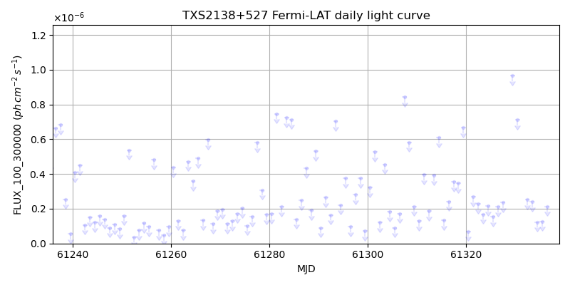
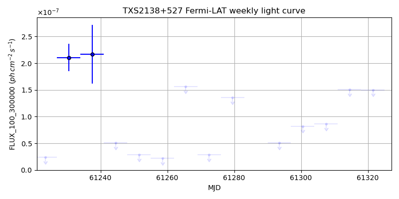
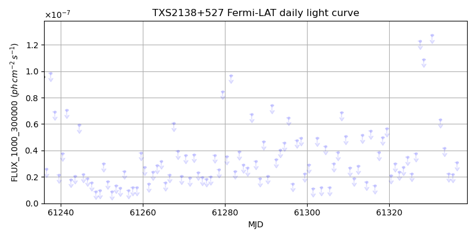
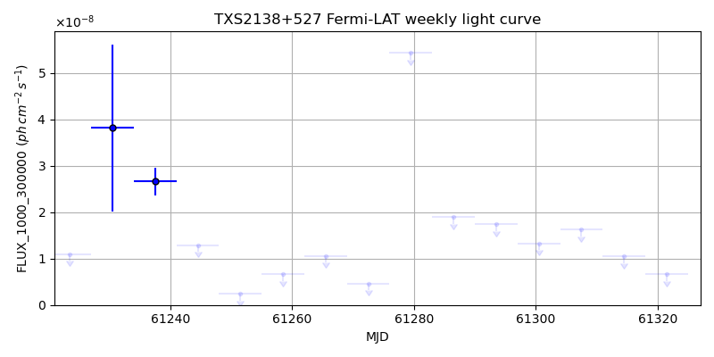

LAT Lightcurve site: https://fermi.gsfc.nasa.gov/ssc/data/access/lat/msl_lc/source/TXS_2138p527
NED: Query
Time of last update of this page: UT: 2026-10-17 15:28 (MJD: 61330.645)
| Property | Value |
|---|---|
| R.A. | 21:39:53.52 |
| Dec. | 53:00:18.0 |
| z | 0.000 |
| 3FGL SpectrumType | |
| 3FGL PL Index | -1.00 |
| 3FGL Flux_100_300000 | -1.00e+00 |
| 3FGL Flux_1000_300000 | -1.00e+00 |
| 3FGL Flux >200 GeV | -1.00e+00 |
| 3FGL Extrap. Crab >200 GeV | -1.00 |
| 3FGL Flux After EBL Absorption >200GeV | -1.00e+00 |
| 3FGL EBL Crab Fraction >200GeV | -1.00 |

| MJD | dMJD | Flux | dFlux | Frac3FGL | FracCrab>200GeV | EBLFracCrab>200GeV |
|---|---|---|---|---|---|---|
| 61325.50 | 0.50 | 1.53e-07 | 0.00e+00 | 0.00 | 0.00 | -0.00 |
| 61326.50 | 0.50 | 2.10e-07 | 0.00e+00 | 0.00 | 0.00 | -0.00 |
| 61327.50 | 0.50 | 2.35e-07 | 0.00e+00 | 0.00 | 0.00 | -0.00 |
| 61328.50 | 0.50 | 1.36e-06 | 0.00e+00 | 0.00 | 0.00 | -0.00 |
| 61329.50 | 0.50 | 9.66e-07 | 0.00e+00 | 0.00 | 0.00 | -0.00 |

| MJD | dMJD | Flux | dFlux | Frac3FGL | FracCrab>200GeV | EBLFracCrab>200GeV |
|---|---|---|---|---|---|---|
| 61293.50 | 3.50 | 5.08e-08 | 0.00e+00 | 0.00 | 0.00 | -0.00 |
| 61300.50 | 3.50 | 8.22e-08 | 0.00e+00 | 0.00 | 0.00 | -0.00 |
| 61307.50 | 3.50 | 8.64e-08 | 0.00e+00 | 0.00 | 0.00 | -0.00 |
| 61314.50 | 3.50 | 1.50e-07 | 0.00e+00 | 0.00 | 0.00 | -0.00 |
| 61321.50 | 3.50 | 1.50e-07 | 0.00e+00 | 0.00 | 0.00 | -0.00 |

| MJD | dMJD | Flux | dFlux | Frac3FGL | FracCrab>200GeV | EBLFracCrab>200GeV |
|---|---|---|---|---|---|---|
| 61325.50 | 0.50 | 2.25e-08 | 0.00e+00 | 0.00 | 0.00 | -0.00 |
| 61326.50 | 0.50 | 3.75e-08 | 0.00e+00 | 0.00 | 0.00 | -0.00 |
| 61327.50 | 0.50 | 1.23e-07 | 0.00e+00 | 0.00 | 0.00 | -0.00 |
| 61328.50 | 0.50 | 1.09e-07 | 0.00e+00 | 0.00 | 0.00 | -0.00 |
| 61329.50 | 0.50 | 1.75e-07 | 0.00e+00 | 0.00 | 0.00 | -0.00 |

| MJD | dMJD | Flux | dFlux | Frac3FGL | FracCrab>200GeV | EBLFracCrab>200GeV |
|---|---|---|---|---|---|---|
| 61293.50 | 3.50 | 1.74e-08 | 0.00e+00 | 0.00 | 0.00 | -0.00 |
| 61300.50 | 3.50 | 1.33e-08 | 0.00e+00 | 0.00 | 0.00 | -0.00 |
| 61307.50 | 3.50 | 1.63e-08 | 0.00e+00 | 0.00 | 0.00 | -0.00 |
| 61314.50 | 3.50 | 1.04e-08 | 0.00e+00 | 0.00 | 0.00 | -0.00 |
| 61321.50 | 3.50 | 6.67e-09 | 0.00e+00 | 0.00 | 0.00 | -0.00 |
--------------------------------------------------------- Using user-supplied coords: 21:39:53.52 53:00:18.0 2000 --------------------------------------------------------- FLWO UT night of: 2026-10-18 Local Sid. @ Midnight: 01:23 Sunset (-15.0) (local, UT): 18:56 01:56 Sunrise (-15.0) (local, UT): 05:22 12:22 Moonrise (local, UT): Moonset (local, UT): 22:59 05:59 Moon phase: 0.47 --------------------------------------------------------- AzTime LSID UT Obj_el Obj_az Mn_el Mn_az Sep. --------------------------------------------------------- 18:56 20:18 01:56 63.9 28.6 30.5 195.3 85.0 19:26 20:48 02:26 66.6 19.9 28.5 202.5 84.9 19:56 21:18 02:56 68.2 8.9 25.9 209.3 84.8 20:26 21:48 03:26 68.5 356.7 22.6 215.6 84.7 20:56 22:19 03:56 67.5 344.9 18.8 221.3 84.5 21:26 22:49 04:26 65.3 335.1 14.5 226.6 84.4 21:56 23:19 04:56 62.2 327.7 9.9 231.4 84.2 22:26 23:49 05:26 58.5 322.4 5.0 235.7 84.1 22:56 00:19 05:56 54.4 318.9 0.2 239.8 83.9 23:26 00:49 06:26 50.1 316.7 -5.5 243.5 83.8 23:56 01:19 06:56 45.7 315.5 -11.3 247.0 83.6 00:26 01:49 07:26 41.2 315.2 -17.0 250.4 83.4 00:56 02:19 07:56 36.7 315.4 -22.8 253.6 83.3 01:26 02:49 08:26 32.2 316.3 -28.7 256.7 83.1 01:56 03:19 08:56 27.9 317.5 -34.7 259.8 82.9 02:26 03:49 09:26 23.6 319.2 -40.7 263.0 82.7 02:56 04:20 09:56 19.5 321.2 -46.8 266.4 82.5 03:26 04:50 10:26 15.6 323.5 -52.8 270.1 82.4 03:56 05:20 10:56 11.9 326.2 -58.9 274.3 82.2 04:26 05:50 11:26 8.5 329.2 -64.9 279.6 82.0 04:56 06:20 11:56 5.5 332.5 -70.8 287.0 81.8 05:22 06:46 12:22 3.1 335.5 -75.7 297.1 81.7 --------------------------------------------------------- Dark hours >55 deg.: 0.00